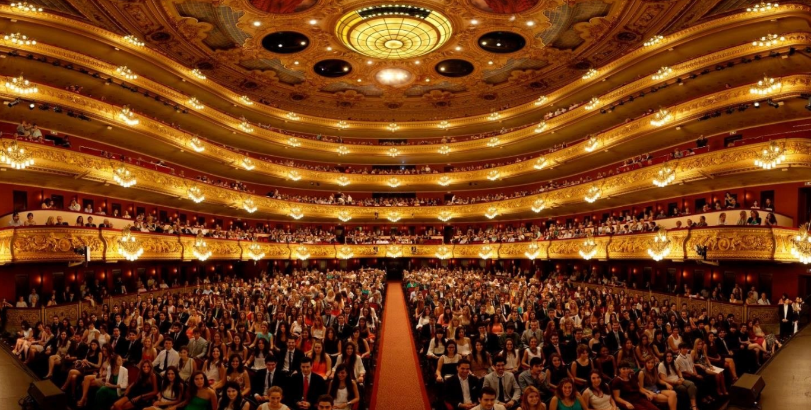

LICEO
⚬
⚬
⚬

☰
Miquel Garriga i Roca construyó el Gran Teatre del Liceu en el año 1847 en la Rambla. Convertido rápidamente en un símbolo
de la emergente burguesía catalana, a diferencia de otros grandes teatros de la época, no fue sufragado por la monarquía
(motivo por el que no hay un palco real), sino por aportaciones particulares, que obtenían a cambio el derecho al uso de palcos o butacas.
Su programación pronto se centró en la ópera, y así ha continuado hasta la actualidad.
En sus más de 150 años de historia ha vivido trágicos accidentes, como el incendio de 1861 o la bomba lanzada por
el anarquista Santiago Salvador en 1893, que causó una veintena de muertos.
El incendio de 1994, que destruyó completamente la sala y el escenario, fue vivido como una tragedia en Barcelona.
Al cabo de pocas semanas empezaron las tareas de reconstrucción, que finalizaron cinco años más tarde con un edificio que
reproduce la ornamentación del antiguo teatro y mantiene al máximo su personalidad.
La reconstrucción permitió ampliar y renovar las instalaciones escénicas y dotarlas de los últimos avances tecnológicos,
con un escenario rotatorio que permite hacer cambios de escena con gran agilidad o hasta tres representaciones simultáneas.
Después de la reconstrucción, el teatro pasó a manos públicas y actualmente pertenece a la Generalitat de Catalunya,
al Ajuntament de Barcelona, a la Diputació de Barcelona y al Ministerio de Cultura del Estado español.
La sala, de 1.869 metros cuadrados y 2.292 localidades, distribuidas en la platea y cinco niveles, lo convierte en uno
de los teatros de ópera más grandes del mundo.